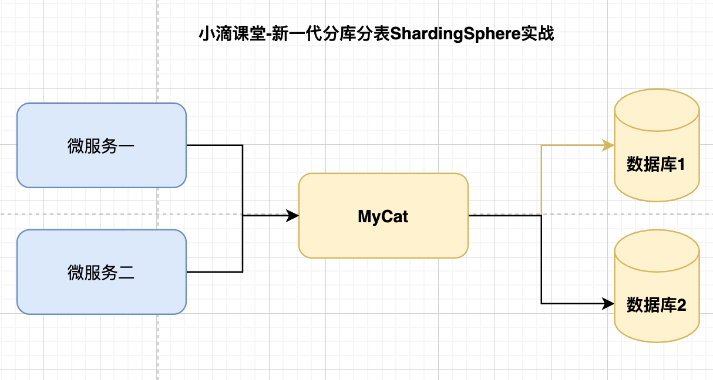
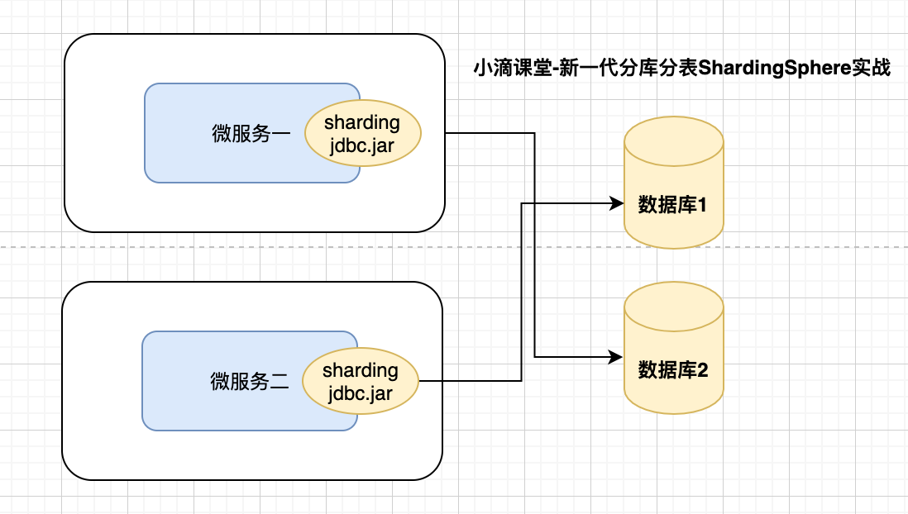
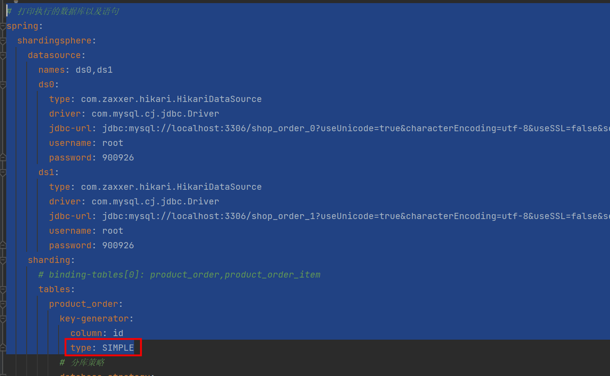

Mysql数据库架构演进从单机到主从到分库分表在数据量及访问压力不是特别大的情况，首先考虑缓存、读写分离、索引技术等方案
- 如果数据量极大，且业务持续增长快，再考虑分库分表方案
Sharding-JDBC学习
Mysql数据库架构演变历史
单机
请求量大查询慢
单机故障导致业务不可用
主从
数据库主从同步，从库可以水平扩展，满足更大读需求
但单服务器TPS，内存，IO都是有限的
分库分表
解决数据库本身瓶颈，包括连接数过多等。分库可以解决单台数据库的并发访问压力问题。分表可以解决单表海量数据的查询性能问题
解决系统本身IO、CPU瓶颈
分库分表
垂直分表
“大表拆小表”，基于列字段进行的。
- 拆分原则一般是表中的字段较多，将不常用的或者数据较大，长度较长的拆分到“扩展表 如text类型字段
- 访问频次低、字段大的商品描述信息单独存放在一张表中，访问频次较高的商品基本信息单独放在一张表中
垂直分库
- 垂直分库能够突破IO、连接数及单机硬件资源的瓶颈。垂直分库可以更好解决业务层面的耦合，业务清晰，且方便管理和维护
- 一般从单体项目根据不同业务进行拆分改造为微服务项目，就是垂直分库
- 垂直分库分表可以提高并发，但是依然没有解决单表数据量过大的问题
水平分表
- 把一张大表拆分成N个小表，表结构一样，但数据不一样，每张表只有部分数据，全部表的数据合起来就是全部数据
- 但是这些表还是在同一个库中，所以单数据库操作还是有IO瓶颈，主要是解决单表数据量过大的问题
水平分库
- 把同个表的数据按照一定规则分到不同的数据库中，数据库在不同的服务器上
- 每个库的结构都一样,但每个库的数据都不一样，没有交集，所有库的并集就是全量数据
- 水平分库的粒度，比水平分表更大
常规开发里面单表建议1千万内，推荐是百万级别单表存储，常规sql和索引优化先行，然后结合缓存+异步+nosql+mq
水平分库分表常见策略讲解
range
方案一：自增id，根据ID范围进行分表（左闭右开）
优点是id是自增长，可以无限增长。扩容不用迁移数据，容易理解和维护
缺点是大部分读和写都访会问新的数据，有IO瓶颈，整体资源利用率低。数据倾斜严重，热点数据过于集中，部分节点有瓶颈
range延伸
时间：年、月、日范围，比如按照月份生成 库或表 pay_log_2022_01、pay_log_2022_02
空间：地理位置：省份、区域（华东、华北、华南）比如按照 省份 生成 库或表
Hash取模
Hash分库分表是最普遍的方案。保证数据较均匀的分散落在不同的库、表中，可以有效的避免热点数据集中问题。缺点是扩容不是很方便，需要数据迁移
分库分表常见中间件介绍
Mycat
- 地址 http://www.mycat.org.cn/
- Java语言编写的MySQL数据库网络协议的开源中间件，前身 Cobar
- 遵守Mysql原生协议，跨语言，跨平台，跨数据库的通用中间件代理
- 是基于 Proxy，它复写了 MySQL 协议，将 Mycat Server 伪装成一个 MySQL 数据库
- 和ShardingShere下的Sharding-Proxy作用类似，需要单独部署

ShardingSphere 下的Sharding-JDBC
- 地址：https://shardingsphere.apache.org/
- Apache ShardingSphere 是一套开源的分布式数据库中间件解决方案组成的生态圈
- 它由 Sharding-JDBC、Sharding-Proxy 和 Sharding-Sidecar 3个独立产品组合
- Sharding-JDBC
- 基于jdbc驱动，不用额外的proxy，支持任意实现 JDBC 规范的数据库
- 它使用客户端直连数据库，以 jar 包形式提供服务，无需额外部署和依赖
- 可理解为加强版的 JDBC 驱动，兼容 JDBC 和各类 ORM 框架

二者之间的区别：
- 两者设计理念相同，主流程都是SQL解析–>SQL路由–>SQL改写–>结果归并
- sharding-jdbc
- 基于jdbc驱动，不用额外的proxy，在本地应用层重写Jdbc原生的方法，实现数据库分片形式
- 是基于 JDBC 接口的扩展，是以 jar 包的形式提供轻量级服务的，性能高
- 代码有侵入性
- Mycat
- 是基于 Proxy，它复写了 MySQL 协议，将 Mycat Server 伪装成一个 MySQL 数据库
- 客户端所有的jdbc请求都必须要先交给MyCat，再有MyCat转发到具体的真实服务器
- 缺点是效率偏低，中间包装了一层
- 代码无侵入性
分库分表基础概念
- 数据节点Node
- 数据分片的最小单元，由数据源名称和数据表组成
ds_0.product_order_0
- 数据分片的最小单元，由数据源名称和数据表组成
- 真实表
- 在分片的数据库中真实存在的物理表,比如订单表 product_order_0、product_order_1、product_order_2
- 逻辑表
- 水平拆分的数据库（表）的相同逻辑和数据结构表的总称,比如订单表 product_order_{0..1}逻辑表就是product_order
- 绑定表
- 指分片规则一致的主表和子表
- 比如product_order表和product_order_item表，均按照order_id分片，则此两张表互为绑定表关系
- 绑定表之间的多表关联查询不会出现笛卡尔积关联，关联查询效率将大大提升
- 广播表
- 指所有的分片数据源中都存在的表，表结构和表中的数据在每个数据库中均完全一致
- 适用于数据量不大且需要与海量数据的表进行关联查询的场景
- 例如：字典表、配置表
分库分表和Sharding-Jdbc常见分片算法讲解
数据库表分片（水平库、表）,包含分片键和分片策略
分片键 (PartitionKey)
- 用于分片的数据库字段，是将数据库(表)水平拆分的关键字段, ShardingSphere也支持根据多个字段进行分片
分片策略
行表达式分片策略 InlineShardingStrategy（必备）
只支持【单分片键】使用Groovy的表达式，提供对SQL语句中的 =和IN 的分片操作支持,可以通过简单的配置使用，无需自定义分片算法，从而避免繁琐的Java代码开发
标准分片策略StandardShardingStrategy
只支持【单分片键】，提供PreciseShardingAlgorithm和RangeShardingAlgorithm两个分片算法
PreciseShardingAlgorithm 精准分片 是必选的，用于处理=和IN的分片
RangeShardingAlgorithm 范围分配 是可选的，用于处理BETWEEN AND分片
如果不配置RangeShardingAlgorithm，如果SQL中用了BETWEEN AND语法，则将按照全库路由处理，性能下降
复合分片策略ComplexShardingStrategy（需了解）
支持【多分片键】，多分片键之间的关系复杂，由开发者自己实现，提供最大的灵活度
提供对SQL语句中的=, IN和BETWEEN AND的分片操作支持
Hint分片策略HintShardingStrategy（需了解）
这种分片策略无需配置分片健，分片健值也不再从 SQL中解析，外部手动指定分片健或分片库，让 SQL在指定的分库、分表中执行
用于处理使用Hint行分片的场景，通过Hint而非SQL解析的方式分片的策略
Hint策略会绕过SQL解析的，对于这些比较复杂的需要分片的查询，Hint分片策略性能可能会更好
不分片策略 NoneShardingStrategy
不分片的策略。
springboot整合shardingjdbc
框架版本说明
<properties>
<maven.compiler.source>8</maven.compiler.source>
<maven.compiler.target>8</maven.compiler.target>
<project.build.sourceEncoding>UTF-8</project.build.sourceEncoding>
<project.reporting.outputEncoding>UTF-8</project.reporting.outputEncoding>
<java.version>1.8</java.version>
<mybatis-plus.version>3.4.0</mybatis-plus.version>
<spring-boot.version>2.5.0</spring-boot.version>
<lombok.version>1.18.16</lombok.version>
<mysql.version>8.0.25</mysql.version>
<sharding-jdbc.version>4.1.1</sharding-jdbc.version>
</properties>maven pom文件配置
<dependencies>
<dependency>
<groupId>org.springframework.boot</groupId>
<artifactId>spring-boot-starter-web</artifactId>
<version>${spring-boot.version}</version>
</dependency>
<dependency>
<groupId>org.springframework.boot</groupId>
<artifactId>spring-boot-starter-test</artifactId>
<version>${spring-boot.version}</version>
<scope>test</scope>
</dependency>
<!--mybatis plus和springboot整合-->
<dependency>
<groupId>com.baomidou</groupId>
<artifactId>mybatis-plus-boot-starter</artifactId>
<version>${mybatis-plus.version}</version>
</dependency>
<dependency>
<groupId>mysql</groupId>
<artifactId>mysql-connector-java</artifactId>
<version>${mysql.version}</version>
</dependency>
<dependency>
<groupId>org.projectlombok</groupId>
<artifactId>lombok</artifactId>
<version>${lombok.version}</version>
<!--<scope>provided</scope>-->
</dependency>
<dependency>
<groupId>org.apache.shardingsphere</groupId>
<artifactId>sharding-jdbc-spring-boot-starter</artifactId>
<version>${sharding-jdbc.version}</version>
</dependency>
<dependency>
<groupId>junit</groupId>
<artifactId>junit</artifactId>
<version>4.13</version>
<scope>test</scope>
</dependency>
</dependencies>
<build>
<plugins>
<plugin>
<groupId>org.springframework.boot</groupId>
<artifactId>spring-boot-maven-plugin</artifactId>
<version>${spring-boot.version}</version>
<configuration>
<fork>true</fork>
<addResources>true</addResources>
</configuration>
</plugin>
</plugins>
</build>SQL脚本
create table product_order_0
(
id bigint auto_increment
primary key,
out_trade_no varchar(64) null comment '订单唯一标识',
state varchar(11) null comment 'NEW 未支付订单,PAY已经支付订单,CANCEL超时取消订单',
create_time datetime null comment '订单生成时间',
pay_amount decimal(16, 2) null comment '订单实际支付价格',
nickname varchar(64) null comment '昵称',
user_id bigint null comment '用户id'
)
collate = utf8mb4_bin;配置文件：
#水平分表配置
spring:
shardingsphere:
datasource:
# 数据源名称，多数据源以逗号分隔(ds0,ds1)
names: ds0,ds1
# names定义的数据源名称作为key（key不能包含下划线，否则无法识别配置）
ds0:
type: com.zaxxer.hikari.HikariDataSource
driver: com.mysql.cj.jdbc.Driver
jdbc-url: jdbc:mysql://localhost:3306/shop_order_0?useUnicode=true&characterEncoding=utf-8&useSSL=false&serverTimezone=Asia/Shanghai&allowPublicKeyRetrieval=true
username: root
password:
ds1:
type: com.zaxxer.hikari.HikariDataSource
driver: com.mysql.cj.jdbc.Driver
jdbc-url: jdbc:mysql://localhost:3306/shop_order_1?useUnicode=true&characterEncoding=utf-8&useSSL=false&serverTimezone=Asia/Shanghai&allowPublicKeyRetrieval=true
username: root
password: 水平分表-单分片键
#水平分表配置
spring:
shardingsphere:
datasource:
# 数据源名称，多数据源以逗号分隔(ds0,ds1)
names: ds0,ds1
# names定义的数据源名称作为key（key不能包含下划线，否则无法识别配置）
ds0:
type: com.zaxxer.hikari.HikariDataSource
driver: com.mysql.cj.jdbc.Driver
jdbc-url: jdbc:mysql://localhost:3306/shop_order_0?useUnicode=true&characterEncoding=utf-8&useSSL=false&serverTimezone=Asia/Shanghai&allowPublicKeyRetrieval=true
username: root
password:
ds1:
type: com.zaxxer.hikari.HikariDataSource
driver: com.mysql.cj.jdbc.Driver
jdbc-url: jdbc:mysql://localhost:3306/shop_order_1?useUnicode=true&characterEncoding=utf-8&useSSL=false&serverTimezone=Asia/Shanghai&allowPublicKeyRetrieval=true
username: root
password:
sharding:
# binding‐tables[0]: product_order,product_order_item
tables:
product_order:
key-generator:
column: id
#主键生成策略 可选内置的 SNOWFLAKE(雪花算法)/UUID 也可以自定义
type: SNOWFLAKE
# 分库策略
database-strategy:
inline:
sharding-column: user_id
algorithm-expression: ds$->{user_id % 2}
# 由数据源名 + 表名组成，以小数点分隔。多个表以逗号分隔，支持inline表达式
actual-data-nodes: ds$->{0..1}.product_order_$->{0..1}
#分表策略：单分片键
table-strategy:
inline:
#分片键
sharding-column: id
#数据分片规则（ID是偶数把数据添加入product_order_0，奇数入product_order_1）
algorithm-expression: product_order_$->{id % 2}
product_order_item:
key-generator:
column: id
type: SNOWFLAKE
# 分库策略
database-strategy:
inline:
sharding-column: user_id
algorithm-expression: ds$->{user_id % 2}
actual-data-nodes: ds$->{0..1}.product_order_item_$->{0..1}
table-strategy:
inline:
sharding-column: product_order_id
algorithm-expression: product_order_item_$->{product_order_id % 2}
ad_config:
key-generator:
column: id
type: SNOWFLAKE
# 广播表
broadcast-tables: ad_config
props:
sql:
show: true测试-分表-查询
@Test
public void customRange1() {
//分区字段查询数据：精准匹配分片表，不会去别的表中扫描数据
ProductOrder productOrder = productOrderMapper.selectById(Long.valueOf("791057093019828224"));
log.info("数据为{}", productOrder.toString());
//非分区字段查询：全表匹配，汇总结果
List<ProductOrder> productOrderList = productOrderMapper.selectList(new QueryWrapper<ProductOrder>().between("create_time","2022-10-23 21:38:28","2022-10-25 21:38:28"));
log.info("数据量{}",productOrderList.size());
}日志打印如下：
2022-10-31 00:50:12.624 INFO 15368 --- [ main] ShardingSphere-SQL : Logic SQL: SELECT id,out_trade_no,state,create_time,pay_amount,nickname,user_id FROM product_order WHERE id=?
2022-10-31 00:50:12.624 INFO 15368 --- [ main] ShardingSphere-SQL : SQLStatement: SelectStatementContext(super=CommonSQLStatementContext(sqlStatement=org.apache.shardingsphere.sql.parser.sql.statement.dml.SelectStatement@2bc16fe2, tablesContext=org.apache.shardingsphere.sql.parser.binder.segment.table.TablesContext@d66502), tablesContext=org.apache.shardingsphere.sql.parser.binder.segment.table.TablesContext@d66502, projectionsContext=ProjectionsContext(startIndex=7, stopIndex=67, distinctRow=false, projections=[ColumnProjection(owner=null, name=id, alias=Optional.empty), ColumnProjection(owner=null, name=out_trade_no, alias=Optional.empty), ColumnProjection(owner=null, name=state, alias=Optional.empty), ColumnProjection(owner=null, name=create_time, alias=Optional.empty), ColumnProjection(owner=null, name=pay_amount, alias=Optional.empty), ColumnProjection(owner=null, name=nickname, alias=Optional.empty), ColumnProjection(owner=null, name=user_id, alias=Optional.empty)]), groupByContext=org.apache.shardingsphere.sql.parser.binder.segment.select.groupby.GroupByContext@78545d40, orderByContext=org.apache.shardingsphere.sql.parser.binder.segment.select.orderby.OrderByContext@34549979, paginationContext=org.apache.shardingsphere.sql.parser.binder.segment.select.pagination.PaginationContext@144a5e6e, containsSubquery=false)
2022-10-31 00:50:12.625 INFO 15368 --- [ main] ShardingSphere-SQL : Actual SQL: ds0 ::: SELECT id,out_trade_no,state,create_time,pay_amount,nickname,user_id FROM product_order_0 WHERE id=? ::: [791057093019828224]
2022-10-31 00:50:12.625 INFO 15368 --- [ main] ShardingSphere-SQL : Actual SQL: ds1 ::: SELECT id,out_trade_no,state,create_time,pay_amount,nickname,user_id FROM product_order_0 WHERE id=? ::: [791057093019828224]
2022-10-31 00:50:12.665 INFO 15368 --- [ main] CustomShardingjdbcTest : 数据为ProductOrder(id=791057093019828224, outTradeNo=333333, state=代发货, createTime=Sun Oct 23 21:38:28 CST 2022, payAmount=0.04, nickname=狗蛋4, userId=14)
2022-10-31 00:50:12.730 INFO 15368 --- [ main] ShardingSphere-SQL : Logic SQL: SELECT id,out_trade_no,state,create_time,pay_amount,nickname,user_id FROM product_order
WHERE (create_time BETWEEN ? AND ?)
2022-10-31 00:50:12.730 INFO 15368 --- [ main] ShardingSphere-SQL : SQLStatement: SelectStatementContext(super=CommonSQLStatementContext(sqlStatement=org.apache.shardingsphere.sql.parser.sql.statement.dml.SelectStatement@52433946, tablesContext=org.apache.shardingsphere.sql.parser.binder.segment.table.TablesContext@5403431a), tablesContext=org.apache.shardingsphere.sql.parser.binder.segment.table.TablesContext@5403431a, projectionsContext=ProjectionsContext(startIndex=8, stopIndex=68, distinctRow=false, projections=[ColumnProjection(owner=null, name=id, alias=Optional.empty), ColumnProjection(owner=null, name=out_trade_no, alias=Optional.empty), ColumnProjection(owner=null, name=state, alias=Optional.empty), ColumnProjection(owner=null, name=create_time, alias=Optional.empty), ColumnProjection(owner=null, name=pay_amount, alias=Optional.empty), ColumnProjection(owner=null, name=nickname, alias=Optional.empty), ColumnProjection(owner=null, name=user_id, alias=Optional.empty)]), groupByContext=org.apache.shardingsphere.sql.parser.binder.segment.select.groupby.GroupByContext@ab327c, orderByContext=org.apache.shardingsphere.sql.parser.binder.segment.select.orderby.OrderByContext@3d798e76, paginationContext=org.apache.shardingsphere.sql.parser.binder.segment.select.pagination.PaginationContext@763b0996, containsSubquery=false)
2022-10-31 00:50:12.730 INFO 15368 --- [ main] ShardingSphere-SQL : Actual SQL: ds0 ::: SELECT id,out_trade_no,state,create_time,pay_amount,nickname,user_id FROM product_order_0
WHERE (create_time BETWEEN ? AND ?) ::: [2022-10-23 21:38:28, 2022-10-25 21:38:28]
2022-10-31 00:50:12.730 INFO 15368 --- [ main] ShardingSphere-SQL : Actual SQL: ds0 ::: SELECT id,out_trade_no,state,create_time,pay_amount,nickname,user_id FROM product_order_1
WHERE (create_time BETWEEN ? AND ?) ::: [2022-10-23 21:38:28, 2022-10-25 21:38:28]
2022-10-31 00:50:12.730 INFO 15368 --- [ main] ShardingSphere-SQL : Actual SQL: ds1 ::: SELECT id,out_trade_no,state,create_time,pay_amount,nickname,user_id FROM product_order_0
WHERE (create_time BETWEEN ? AND ?) ::: [2022-10-23 21:38:28, 2022-10-25 21:38:28]
2022-10-31 00:50:12.730 INFO 15368 --- [ main] ShardingSphere-SQL : Actual SQL: ds1 ::: SELECT id,out_trade_no,state,create_time,pay_amount,nickname,user_id FROM product_order_1
WHERE (create_time BETWEEN ? AND ?) ::: [2022-10-23 21:38:28, 2022-10-25 21:38:28]
2022-10-31 00:50:12.745 INFO 15368 --- [ main] CustomShardingjdbcTest : 数据量70由上可以看出分片字段作为查询条件时，能准定位分片数据所在分片表（上边没有使用分库键，所以只能定位到分片表）。非分片字段查询时，全表匹配，汇总结果。
水平分表-单分片键（标准分片算法）
# 打印执行的数据库以及语句
spring:
shardingsphere:
datasource:
names: ds0,ds1
ds0:
type: com.zaxxer.hikari.HikariDataSource
driver: com.mysql.cj.jdbc.Driver
jdbc-url: jdbc:mysql://localhost:3306/shop_order_0?useUnicode=true&characterEncoding=utf-8&useSSL=false&serverTimezone=Asia/Shanghai&allowPublicKeyRetrieval=true
username: root
password: 900926
ds1:
type: com.zaxxer.hikari.HikariDataSource
driver: com.mysql.cj.jdbc.Driver
jdbc-url: jdbc:mysql://localhost:3306/shop_order_1?useUnicode=true&characterEncoding=utf-8&useSSL=false&serverTimezone=Asia/Shanghai&allowPublicKeyRetrieval=true
username: root
password: 900926
sharding:
# binding‐tables[0]: product_order,product_order_item
tables:
product_order:
key-generator:
column: id
type: SNOWFLAKE
actual-data-nodes: ds$->{0..1}.product_order_$->{0..1}
table-strategy:
standard:
sharding-column: id
#精确分片算法类名称，用于 = 和 IN。该类需实现PreciseShardingAlgorithm 接口并提供无参数的构造器
precise-algorithm-class-name: com.rrc.strategy.CustomTablePreciseShardingAlgorithm
# 范围分片算法类名称，用于 BETWEEN，可选。该类需实现RangeShardingAlgorithm 接口并提供无参数的构造器
range-algorithm-class-name: com.rrc.strategy.CustomRangeShardingAlgorithm
database-strategy:
standard:
sharding-column: user_id
precise-algorithm-class-name: com.rrc.strategy.CustomDBPreciseShardingAlgorithm
props:
sql:
show: true精准分片算法实现
public class CustomTablePreciseShardingAlgorithm implements PreciseShardingAlgorithm<Long> {
/**
*
* @param dataSourceNames 数据源集合
* 在分库时值为所有分片库的集合 databaseNames
* 分表时为对应分片库中所有分片表的集合 tablesNames
*
* @param shardingValue 分片属性，包括
* logicTableName 为逻辑表，
* columnName 分片健（字段），
* value 为从 SQL 中解析出的分片健的值
* @return
*/
@Override
public String doSharding(Collection<String> dataSourceNames, PreciseShardingValue<Long> shardingValue) {
for (String databaseName : dataSourceNames) {
String value = shardingValue.getValue() % dataSourceNames.size() + "";
//value是0，则进入0库表，1则进入1库表
if (databaseName.endsWith(value)) {
return databaseName;
}
}
throw new IllegalArgumentException();
}
}范围分片算法实现
public class CustomRangeShardingAlgorithm implements RangeShardingAlgorithm<Long> {
/**
*
* @param dataSourceNames 数据源集合
* 在分库时值为所有分片库的集合 databaseNames
* 分表时为对应分片库中所有分片表的集合 tablesNames
*
* @param shardingValue 分片属性，包括
* logicTableName 为逻辑表，
* columnName 分片健（字段），
* value 为从 SQL 中解析出的分片健的值
* @return
*/
@Override
public Collection<String> doSharding(Collection<String> dataSourceNames, RangeShardingValue<Long> shardingValue) {
Set<String> result = new LinkedHashSet<>();
//between 开始值
Long lower = shardingValue.getValueRange().lowerEndpoint();
//between 结束值
Long upper = shardingValue.getValueRange().upperEndpoint();
for(long i=lower;i<=upper;i++){
for(String datasource : dataSourceNames){
String value = i % dataSourceNames.size() +"";
if(datasource.endsWith(value)){
result.add(datasource);
}
}
}
return result;
}
}测试标准分片
@Test
public void customRange() {
productOrderMapper.selectList(new QueryWrapper<ProductOrder>().between("id",793987167104794624L,793987167104794624L));
productOrderMapper.selectList(new QueryWrapper<ProductOrder>().in("id",793987167104794624L,793987167373230080L));
}日志打印如下：
2022-10-31 23:54:19.468 INFO 19472 --- [ main] ShardingSphere-SQL : Logic SQL: SELECT id,out_trade_no,state,create_time,pay_amount,nickname,user_id FROM product_order
WHERE (id BETWEEN ? AND ?)
2022-10-31 23:54:19.468 INFO 19472 --- [ main] ShardingSphere-SQL : SQLStatement: SelectStatementContext(super=CommonSQLStatementContext(sqlStatement=org.apache.shardingsphere.sql.parser.sql.statement.dml.SelectStatement@6c5ae8fd, tablesContext=org.apache.shardingsphere.sql.parser.binder.segment.table.TablesContext@17354708), tablesContext=org.apache.shardingsphere.sql.parser.binder.segment.table.TablesContext@17354708, projectionsContext=ProjectionsContext(startIndex=8, stopIndex=68, distinctRow=false, projections=[ColumnProjection(owner=null, name=id, alias=Optional.empty), ColumnProjection(owner=null, name=out_trade_no, alias=Optional.empty), ColumnProjection(owner=null, name=state, alias=Optional.empty), ColumnProjection(owner=null, name=create_time, alias=Optional.empty), ColumnProjection(owner=null, name=pay_amount, alias=Optional.empty), ColumnProjection(owner=null, name=nickname, alias=Optional.empty), ColumnProjection(owner=null, name=user_id, alias=Optional.empty)]), groupByContext=org.apache.shardingsphere.sql.parser.binder.segment.select.groupby.GroupByContext@1aed6f0b, orderByContext=org.apache.shardingsphere.sql.parser.binder.segment.select.orderby.OrderByContext@3b3546a3, paginationContext=org.apache.shardingsphere.sql.parser.binder.segment.select.pagination.PaginationContext@134c38, containsSubquery=false)
2022-10-31 23:54:19.469 INFO 19472 --- [ main] ShardingSphere-SQL : Actual SQL: ds0 ::: SELECT id,out_trade_no,state,create_time,pay_amount,nickname,user_id FROM product_order_0
WHERE (id BETWEEN ? AND ?) ::: [793987167104794624, 793987167104794624]
2022-10-31 23:54:19.469 INFO 19472 --- [ main] ShardingSphere-SQL : Actual SQL: ds1 ::: SELECT id,out_trade_no,state,create_time,pay_amount,nickname,user_id FROM product_order_0
WHERE (id BETWEEN ? AND ?) ::: [793987167104794624, 793987167104794624]
2022-10-31 23:54:19.554 INFO 19472 --- [ main] ShardingSphere-SQL : Logic SQL: SELECT id,out_trade_no,state,create_time,pay_amount,nickname,user_id FROM product_order
WHERE (id IN (?,?))
2022-10-31 23:54:19.554 INFO 19472 --- [ main] ShardingSphere-SQL : SQLStatement: SelectStatementContext(super=CommonSQLStatementContext(sqlStatement=org.apache.shardingsphere.sql.parser.sql.statement.dml.SelectStatement@214fba74, tablesContext=org.apache.shardingsphere.sql.parser.binder.segment.table.TablesContext@252c6cdb), tablesContext=org.apache.shardingsphere.sql.parser.binder.segment.table.TablesContext@252c6cdb, projectionsContext=ProjectionsContext(startIndex=8, stopIndex=68, distinctRow=false, projections=[ColumnProjection(owner=null, name=id, alias=Optional.empty), ColumnProjection(owner=null, name=out_trade_no, alias=Optional.empty), ColumnProjection(owner=null, name=state, alias=Optional.empty), ColumnProjection(owner=null, name=create_time, alias=Optional.empty), ColumnProjection(owner=null, name=pay_amount, alias=Optional.empty), ColumnProjection(owner=null, name=nickname, alias=Optional.empty), ColumnProjection(owner=null, name=user_id, alias=Optional.empty)]), groupByContext=org.apache.shardingsphere.sql.parser.binder.segment.select.groupby.GroupByContext@61c87f1b, orderByContext=org.apache.shardingsphere.sql.parser.binder.segment.select.orderby.OrderByContext@1857fe6c, paginationContext=org.apache.shardingsphere.sql.parser.binder.segment.select.pagination.PaginationContext@44976b08, containsSubquery=false)
2022-10-31 23:54:19.554 INFO 19472 --- [ main] ShardingSphere-SQL : Actual SQL: ds0 ::: SELECT id,out_trade_no,state,create_time,pay_amount,nickname,user_id FROM product_order_0
WHERE (id IN (?,?)) ::: [793987167104794624, 793987167373230080]
2022-10-31 23:54:19.554 INFO 19472 --- [ main] ShardingSphere-SQL : Actual SQL: ds1 ::: SELECT id,out_trade_no,state,create_time,pay_amount,nickname,user_id FROM product_order_0
WHERE (id IN (?,?)) ::: [793987167104794624, 793987167373230080]由上可以看出between("id",793987167104794624L,793987167104794624L)可以确定分片定位到product_order_0，而没有分库键所以执行了ds0和ds1的全库查询。
更换连接池
spring boot和shardingjdbc默认使用的数据库连接池是 HikariCP。如果要在shardingsphere中使用druid,需要在项目中整合后才能生效
说明：
- 为shardingsphere使用druid数据源时，不要使用druid-spring-boot-starter这个包，因为它在会启动时自动从配置文件生成datasource,所以在这里使用druid这个包
- 因为druid使用了log4j2,我们对spring-boot-starter-logging做了exclusion
yml配置：
# 打印执行的数据库以及语句
spring:
shardingsphere:
datasource:
names: ds0,ds1
ds0:
type: com.alibaba.druid.pool.DruidDataSource
driverClassName: com.mysql.cj.jdbc.Driver
url: jdbc:mysql://localhost:3306/shop_order_0?useUnicode=true&characterEncoding=utf-8&useSSL=false&serverTimezone=Asia/Shanghai&allowPublicKeyRetrieval=true
username: root
password: 900926
ds1:
type: com.alibaba.druid.pool.DruidDataSource
driverClassName: com.mysql.cj.jdbc.Driver
url: jdbc:mysql://localhost:3306/shop_order_1?useUnicode=true&characterEncoding=utf-8&useSSL=false&serverTimezone=Asia/Shanghai&allowPublicKeyRetrieval=true
username: root
password: 900926使用druid数据源时，原有的shardingsphere配置中,jdbc-url要修改为url.
DruidConfig.java
@Configuration
public class DruidConfig {
/**
* Druid监控
*/
@Bean
public ServletRegistrationBean statViewServlet(){
ServletRegistrationBean bean = new ServletRegistrationBean(new StatViewServlet(), "/druid/*");
Map<String,String> initParams = new HashMap<>();//这是配置的druid监控的登录密码
initParams.put("loginUsername","root");
initParams.put("loginPassword","root");
//默认就是允许所有访问
initParams.put("allow","127.0.0.1,192.168.3.4");
//黑名单IP
initParams.put("deny","192.168.15.21");
bean.setInitParameters(initParams);
return bean;
}
/**
* web监控的filter
*/
@Bean
public FilterRegistrationBean webStatFilter(){
FilterRegistrationBean bean = new FilterRegistrationBean();
bean.setFilter(new WebStatFilter());
Map<String,String> initParams = new HashMap<>();
initParams.put("exclusions","/static/*,*.js,*.gif,*.jpg,*.png,*.css,*.ico,/druid/*");//过滤掉需要监控的文件
bean.setInitParameters(initParams);
bean.setUrlPatterns(Arrays.asList("/*"));
return bean;
}
}自定义分布式ID算法
实现ShardingKeyGenerator接口，自定义分布式主键生成算法
@Slf4j
public class SimpleShardingKeyGenerator implements ShardingKeyGenerator {
private AtomicLong atomic = new AtomicLong(1000);
@Getter
@Setter
private Properties properties = new Properties();
/**
* 分布式主键实现算法。
*/
@Override
public Comparable<?> generateKey() {
return atomic.incrementAndGet();
}
@Override
public String getType() {
//声明类型，需要在配置文件中配置此key
return "SIMPLE";
}
@Override
public Properties getProperties() {
return null;
}
@Override
public void setProperties(Properties properties) {
}
}resources下配置META-INF/services/org.apache.shardingsphere.spi.keygen.ShardingKeyGenerator
com.rrc.generator.SimpleShardingKeyGenerator配置主键生成策略为自定义key

按上面配置的ShardingJDBC表主键生成策略并没有生效，主键依然是雪花算法生成的ID。
问题原因：
MybatisPLus在不显式指定主键且有名为“id”的字段，会将id视为主键，当分片键也是该字段时，会与MP冲突，导致Sharding-JDBC的分片键生成策略失效。
那么解决方案就很简单了：
第一种：分片键不叫“id”就行了
第二种：如果分片键是主键，又想叫id，可在分片键上标记主键@TableId，并指定主键类型type = IdType.AUTO即可
广播表
指所有的分片数据源中都存在的表，表结构和表中的数据在每个数据库中均完全一致。适用于数据量不大且需要与海量数据的表进行关联查询的场景，例如：字典表。
简单此处不做说明
绑定表
指分片规则一致的主表和子表。例如：course表和 course_detail表，均按照 course_id分片，则此两张表互为绑定表关系。绑定表之间的多表关联查询不会出现笛卡尔积关联，关联查询效率将大大提升。
简单此处不做说明
读写分离
配置文件：
# 打印执行的数据库以及语句
spring:
shardingsphere:
datasource:
names: ds0,ds1
ds0:
type: com.zaxxer.hikari.HikariDataSource
driver: com.mysql.cj.jdbc.Driver
jdbc-url: jdbc:mysql://localhost:3306/shop_order_0?useUnicode=true&characterEncoding=utf-8&useSSL=false&serverTimezone=Asia/Shanghai&allowPublicKeyRetrieval=true
username: root
password: 900926
ds1:
type: com.zaxxer.hikari.HikariDataSource
driver: com.mysql.cj.jdbc.Driver
jdbc-url: jdbc:mysql://localhost:3306/shop_order_1?useUnicode=true&characterEncoding=utf-8&useSSL=false&serverTimezone=Asia/Shanghai&allowPublicKeyRetrieval=true
username: root
password: 900926
sharding:
default-data-source-name: ds0
masterslave:
#配置主从名称
name: ms
#置主库master,负责数据的写入
master-data-source-name: ds0
#配置从库slave节点
slave-data-source-names: ds1
#配置slave节点的负载均衡均衡策略,采用轮询机制
load-balance-algorithm-type: round_robin
props:
sql:
show: true表结构：
-- auto-generated definition
create table ad_config
(
id bigint unsigned not null comment '主键id'
primary key,
config_key varchar(1024) null comment '配置key',
config_value varchar(1024) null comment '配置value',
type varchar(128) null comment '类型'
)
collate = utf8mb4_bin;测试类：
@ActiveProfiles("rw")
@RunWith(SpringRunner.class)
@SpringBootTest(classes = ShardingjdbcApplication.class)
@Slf4j
public class ShardingjdbcMasterSlave {
@Autowired
private AdConfigMapper adConfigMapper;
@Test
public void insert() {
AdConfig adConfig = new AdConfig();
adConfig.setId(100002L);
adConfig.setConfigValue("1111");
adConfig.setConfigKey("333333");
adConfig.setType("44444");
adConfigMapper.insert(adConfig);
adConfig = adConfigMapper.selectById(100001L);
System.out.println(adConfig);
}
}日志打印：
2022-11-02 00:41:07.324 INFO 19268 --- [ main] ShardingSphere-SQL : Logic SQL: INSERT INTO ad_config ( id,
config_key,
config_value,
type ) VALUES ( ?,
?,
?,
? )
2022-11-02 00:41:07.324 INFO 19268 --- [ main] ShardingSphere-SQL : SQLStatement: CommonSQLStatementContext(sqlStatement=org.apache.shardingsphere.sql.parser.sql.statement.dml.InsertStatement@54567b05, tablesContext=org.apache.shardingsphere.sql.parser.binder.segment.table.TablesContext@3a5e2525)
2022-11-02 00:41:07.324 INFO 19268 --- [ main] ShardingSphere-SQL : Actual SQL: ds0 ::: INSERT INTO ad_config ( id,
config_key,
config_value,
type ) VALUES ( ?,
?,
?,
? )
2022-11-02 00:41:07.515 INFO 19268 --- [ main] ShardingSphere-SQL : Logic SQL: SELECT id,config_key,config_value,type FROM ad_config WHERE id=?
2022-11-02 00:41:07.515 INFO 19268 --- [ main] ShardingSphere-SQL : SQLStatement: SelectStatementContext(super=CommonSQLStatementContext(sqlStatement=org.apache.shardingsphere.sql.parser.sql.statement.dml.SelectStatement@2086d469, tablesContext=org.apache.shardingsphere.sql.parser.binder.segment.table.TablesContext@b1d19ff), tablesContext=org.apache.shardingsphere.sql.parser.binder.segment.table.TablesContext@b1d19ff, projectionsContext=ProjectionsContext(startIndex=7, stopIndex=37, distinctRow=false, projections=[ColumnProjection(owner=null, name=id, alias=Optional.empty), ColumnProjection(owner=null, name=config_key, alias=Optional.empty), ColumnProjection(owner=null, name=config_value, alias=Optional.empty), ColumnProjection(owner=null, name=type, alias=Optional.empty)]), groupByContext=org.apache.shardingsphere.sql.parser.binder.segment.select.groupby.GroupByContext@17c53dfb, orderByContext=org.apache.shardingsphere.sql.parser.binder.segment.select.orderby.OrderByContext@184de357, paginationContext=org.apache.shardingsphere.sql.parser.binder.segment.select.pagination.PaginationContext@efe49ab, containsSubquery=false)
2022-11-02 00:41:07.515 INFO 19268 --- [ main] ShardingSphere-SQL : Actual SQL: ds1 ::: SELECT id,config_key,config_value,type FROM ad_config WHERE id=?
null从日志可以发现写请求进入ds0，读请求进入ds1。
经验教训
雪花算法最后12位为存储序列号。同一毫秒时间戳时，通过这个递增的序列号来区分。即对于同一台机器而言，同一毫秒时间戳下，可以生成 2^12=4096 个不重复 id。
但是如果项目并发低，大概率同一毫秒内并发很少，12位序列号大概率都为0，生成的雪花算法都是偶数，所以分片HASH值应该为奇数，防止偶数/偶数导致数据分片不均匀。
引用
springboot整合shardingjdbc实现分库分表最简单demo